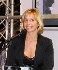

Maria Kristina "Tina" Nordström
Svensk kock, programledare och författare, flera bolagsengagemang.
| Född: | 1973-08-06 Påarp, Välluv fs, Helsingborgs kn, Malmöhus län. [1] |
|---|
| Levde: | 1981 Stg 917, S Brunnsv 70, Helsingborg, Raus fs, Helsingborgs kn. [1] |
|---|
| Levde Sambo: | 1995. |
|---|
| Vigsel: | 2011-08-28 Glumslöv kyrka, Öregrund. |
|---|
| Levde: | 2012 Helsinborg. |
|---|
Noteringar
Kristina "Tina" Nordström, även känd som Mat-Tina, född 6 augusti 1973 i Välluv, Skåne, är en svensk kock och programledare från Helsingborg.
Biografi
Nordström började vid åtta års ålder arbeta på Ramlösa Wärdshus som drevs av hennes föräldrar. Nordström gick restaurangutbildning på gymnasiet och arbetade sedan två säsonger på Jan Hurtigkarl & Co i Helsingör. Efter det har hon arbetat på Grand Hotel i Mölle, Petri Pumpa i Lund samt Kattegat Gastronomi och Logi i Torekov. Nordström deltog i matolympiaden i Erfurt år 2000 där hennes lag vann silver.[1]
Efter att hon deltagit i Årets kock-tävlingen år 2000 upptäcktes hon av TV. Hon medverkade efter detta ett antal gånger som kock i Nyhetsmorgon på TV4, varefter hon år 2001 rekryterades av Sveriges Television. Där medverkade hon i matlagningsprogrammet Mat, som hon gjorde tillsammans med Tomas Tengby. Programmet blev en stor succé och gick i sju säsonger. Utropet "Jättegott!", sagt på karaktäristisk skånska, har kommit att bli hennes signum.[2][3]
Nordström var under 2005 programledare för den tredje säsongen av New Scandinavian Cooking, ett matprogram från den amerikanska TV-kanalen PBS, som rönt framgång i USA och även visats i Tyskland och Frankrike.[4] För detta bidrag till "att förmedla kännedom om Sverige och svensk matkultur runt om i världen" utsågs Tina Nordström till Årets Svenska Kvinna 2006 av SWEA. År 2005 var hon även tillbaka på SVT med programmet Tinas mat och 2006 med Tinas kök. Hon har även medverkat i matlagningsprogrammet Perfect Day på PBS åren 2007 och 2008 och i ett antal 3 minuter långa matlagningsprogram på Aftonbladet TV sedan 2007. Sedan 2007 är hon även köttrådgivare på dagligvarukedjan City Gross.
Nordström har skrivit ett flertal kokböcker, bland annat Tinas mat, Tina och Jättegott Tina. I "Julstök med Tina" fanns även ett avsnitt som demonstrerade hur tittarna själva kan sy Tinas förkläde. Sedan 2007 är hon ledamot i styrelsen för börsnoterade bolaget The Empire.
Under våren 2008 deltog Nordström i TV4's dansprogram Let's Dance, där hon tillsammans med danspartnern Tobias Karlsson tog sig till final och där vann över speedwaystjärnan Tony Rickardsson och hans danspartner Annika Sjöö. Under 2009 rekryterades Nordström till TV4, där hon medverkade i den svenska versionen av Gordon Ramsays cookalong-program, kallat Tinas cookalong.[3]
Tina Nordström är gift med Martin Holmqvist och har tillsammans med honom två barn ¿ en pojke, född 2006, och en flicka, född 2009.
Böcker & TV
Jag tycker ju att det är jättekul att göra TV. För det mesta. Ibland önskar man att man bara kunde laga maten utan att alla kameror ska få med precis varenda vinkel och förklaring, men det är samtidigt det som är tjusningen. Att få berätta för så många människor om det jag tycker är det roligaste som finns - att laga riktigt god och enkel mat.
Böckerna är lite samma grej. Det tar lite längre tid att göra en bok än ett tv-program, men å andra sidan varar den längre i bokhyllan. Och så kan man lägga lite mer tid på att få riktigt snygga bilder.
Här har ni alla tv-program och böcker som jag gjort.
Mat
2001-2004, Sveriges Television (7 säsonger à 16x30 minuter)
svt.se/mat
New Scandinavian Cooking
2004, PBS (13 pgm)
www.scandcook.com
Tinas Mat
2005, Sveriges Television (16x30 minuter)
svt.se/mat
Tinas kök
2006, Sveriges Television (8x30 minuter)
svt.se/mat
Perfect Day
2007, PBS (4x30 minuter)
www.scandcook.com
Tinas Mat
2007, Aftonbladet.se (52x3 minuter)
www.aftonbladet.se/matvin/mat-tina/
Böcker
Tinas kök ( 2006)
nya recept och tips från SVT:s program Mat 2006
En matresa genom Sverige (2005)
Tina. (2003)
67 nya recept och många tips från SVT:s program Mat 2003
Jättegott Tina (2002)
55 recept från SVT:s program Mat 2002
Tinas mat (2001)
50 recept från programmet i SVT(200)
Webbplats & Facebook
tina.se/index.php?id=11
www.facebook.com/Jattegott
Bolagsengagemang
www.allabolag.se/5566089479/Tina_Nordstrom_AB
www.allabolag.se/5566672506/Fastighets_AB_Anit
www.allabolag.se/5569255671/TNAL_Produktion_AB
www.allabolag.se/5568512536/Tasteful_Concepts_Nordic_AB
Referense
1. Tina Nordström (2001). Tinas mat. Stockholm: Natur och kultur. sid. 7-10. ISBN 91-27-35385-0
2. Elin Peters (8 mars 2009). ”Kockarna som gjorde skillnad”. Dagens Nyheter. Läst 15 juli 2009.
3. [a b] Mat-Tina tar efter hårdkokta Gordon Ramsey i nytt program. Svensk Damtidning, 27 maj 2009. Läst 15 juli 2009.
4. About us. New Scandinavian Cooking. Läst 15 juli 2009.
Personhistoria
| Årtal | Ålder | Händelse |
|---|
| 1973 |
|
Födelse 1973-08-06 Påarp, Välluv fs, Helsingborgs kn, Malmöhus län [1] |
| 1981 |
|
Levde 1981 Stg 917, S Brunnsv 70, Helsingborg, Raus fs, Helsingborgs kn [1] |
| 1995 |
|
Levde Sambo Jan Martin Holmqvist 1995 |
| 2011 |
38 år |
Vigsel Jan Martin Holmqvist 2011-08-28 Glumslöv kyrka, Öregrund |
| 2012 |
|
Levde Jan Martin Holmqvist 2012 Helsinborg |
Dokument
Källor
|
|  |
2006. Tina Nordström på Bok- och biblioteksmässan i Göteborg (2006)
Foto: Lennart Guldbrandsson, Göteborg
|
|
{kind=link}